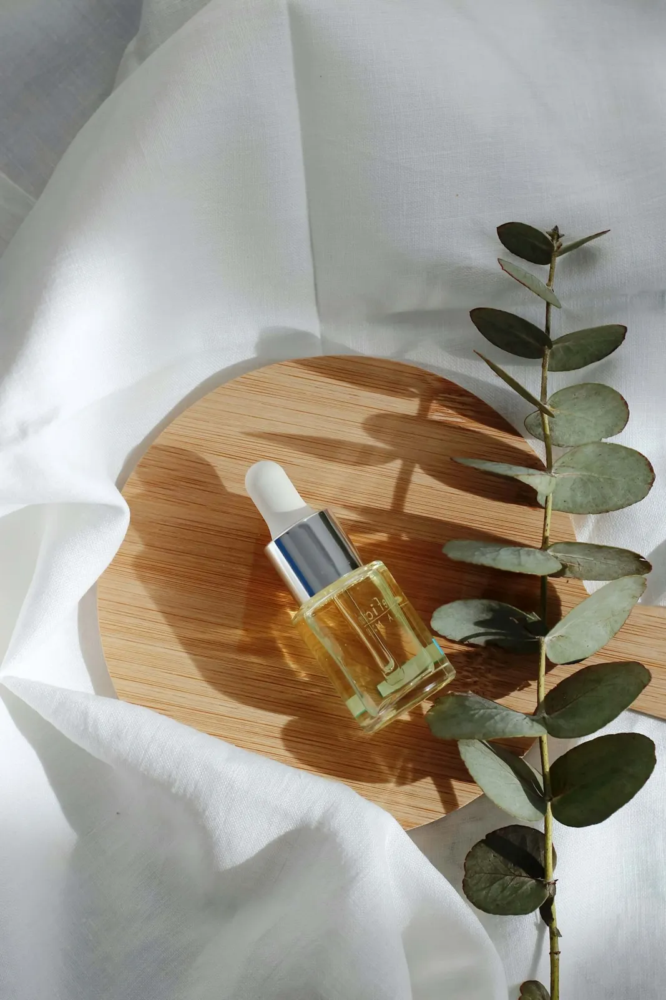
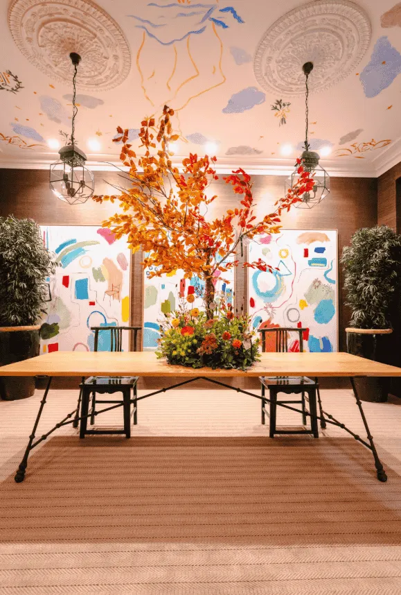

Your B2B2C growth & storytelling partner in Europe.
Thrive with clarity, cultural understanding and human connections that matter.


Origenal Story connects Brazil and Europe to turn market opportunities into growth, combining intelligence, specialist expertise, international networks and commercial activation.
Brands whose value is rooted in nature, taste and care.
Food, ingredient and purpose-led businesses ready to grow beyond their home market.
Food & ingredients

Gourmet & food service
Well-being & cosmetics

Lifestyle & premium
Four steps from opportunity to momentum.
Each step stands on its own. Together they take a product from “could this work abroad?” to signed partners.
Read the market
Where can your product create value in Europe?
Your product is successful in your home market, and you're ready to grow internationally. Remember your product is only the starting point.
- 01Explore the market
- 02Identify the gaps & opportunities
- 03Understand your new universe
- 04Check claims and verifications
- 05Identify your channel & adapt your story

Make your story travel
Your story may be clear at home. Will it stay the same when you export it?
Entering a new country isn't just about translating your website or tweaking a few messages.
- 01Tap into your Origenal Story
- 02Chameleonise your story
- 03Define your own commercial story
- 04Your story is alive
Create the right connections
Identify the optimal route to market.
Connecting with the right distributor, importer, foodservice operator, retailer, or strategic partner can make the difference between having a product in a market and actually building a business there.
- 01Find your route to market
- 02Identify the right players
- 03Prioritise your targets
- 04Create the conversation and turn it into momentum

Understand what matters
Activate what resonates.
Entering a new market is not only about understanding the category or finding the right commercial partners.
- 01Understand your consumer
- 02Decode your market
- 03Translate insight into opportunity
- 04Activate, test & learn
We know the market and the people behind it.
Sector insight, commercial thinking and an international network, with trusted European specialists when deeper expertise is needed.
The journalist's eye
10+ years covering the global food and ingredients ecosystem as a B2B journalist, at SIAL Paris, Anuga, Biofach, Alimentaria and in-cosmetics Global. We know how these events work from the inside.
The marketer's discipline
25+ years across international marketing, branding and business development. Commercial thinking behind every market decision, not just research.
A network of specialists
Trusted European partners in nutrition, science, regulation, claims and certifications, brought in when deeper expertise is needed.
Across ingredients, food, foodservice, fresh produce, sustainability and premium natural cosmetics.
 Claudia Vasquez · Founder
Claudia Vasquez · FounderBuilt from market experience, journalistic insight and human connection.
She doesn't just attend the trade fairs. She knows how they work from the inside.
Led by Claudia Vasquez, Origenal Story combines 25+ years of international marketing, branding and B2B journalism experience in food, ingredients and sustainability. The result: 100+ strategic projects across 20+ countries.
Meet ClaudiaWhere impactful stories take shape.
EU Market Opportunity Mapping for a Brazilian Açaí Producer
Rude Health — Packaging Content & Market Adaptation for Spain
Naturamus — International Press Activation at in-cosmetics Global Paris
Plant-Based Seafood — Market Prioritisation in France & Spain
Passina — International Brand Repositioning Around SIAL Paris
Lévere — Spain Market Access & Distributor Search
¡Vamos!
Tell us where you want to grow next. We'll tell you honestly where we can help.
Start a conversation